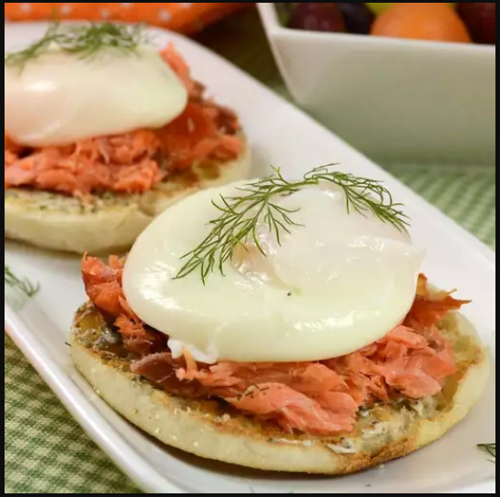

Smoked Salmon Dill Eggs Benedict

Description
Sure! Smoked Salmon Dill Eggs Benedict is a delicious twist on the classic Eggs Benedict dish.
Instead of using Canadian bacon or ham, it features smoked salmon as the protein component.
The eggs are poached to perfection and placed on top of English muffins, then smothered in rich and creamy hollandaise sauce infused with fresh dill for a burst of flavor.
It's a luxurious breakfast or brunch option that's sure to impress!
Ingredients
- ¼ cup butter, softened
- 2 tablespoons fresh dill
- 1 teaspoon lemon zest
- 1 pinch cayenne pepper
- 1 teaspoon white vinegar
- 1 pinch salt
- 4 eggs
- 2 English muffins, split and toasted
- 4 ounces sliced smoked salmon
- salt and ground black pepper to taste
- 4 small fresh dill sprigs
Steps
- Stir butter, dill, lemon zest, cayenne pepper, salt, and black pepper in a bowl until combined. Set aside.
- Fill a large saucepan with 2 to 3 inches of water and bring to a boil over high heat. Reduce heat to medium-low, pour in vinegar and a pinch of salt. Crack an egg into a bowl then gently slip the egg into the water. Repeat with remaining eggs. Poach eggs until whites are firm and yolks have thickened but are not hard, 4 to 6 minutes. Remove eggs from water with a slotted spoon, dab on a kitchen towel to remove excess water, then transfer to a warm plate.
- Generously spread each English muffin half with dill butter. Top with a layer of smoked salmon, then 1 poached egg. Season with cayenne pepper, salt, and black pepper to taste. Garnish with a dill sprig and serve.